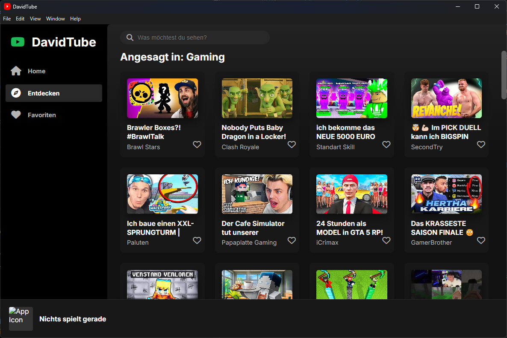
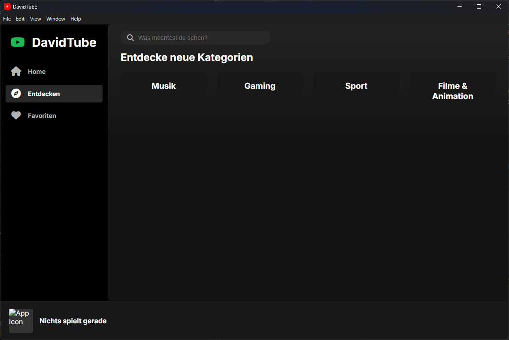

⚡ Live-Suche
Finde Videos sofort, während du noch tippst. Keine Wartezeit, keine Ladebalken.
❤️ Favoriten
Speichere deine Lieblingsvideos mit einem Klick und greife jederzeit darauf zu.
✨ Elegantes UI
Ein sauberes, an Spotify angelehntes Design, das sich auf das Wesentliche konzentriert.
Ein Blick in die App


Häufig gestellte Fragen
Ja, absolut. DavidTube ist ein Open-Source-Projekt, das als Demonstration moderner Web-Technologien dient. Es ist und bleibt kostenlos.
Aktuell gibt es eine offizielle Version für Windows. Da die App mit Electron gebaut ist, sind zukünftige Versionen für macOS und Linux technisch möglich.
Sehr sicher. Der gesamte Quellcode ist öffentlich auf GitHub einsehbar. Es werden keine persönlichen Daten gesammelt, außer den Favoriten, die lokal auf deinem eigenen Computer gespeichert werden.